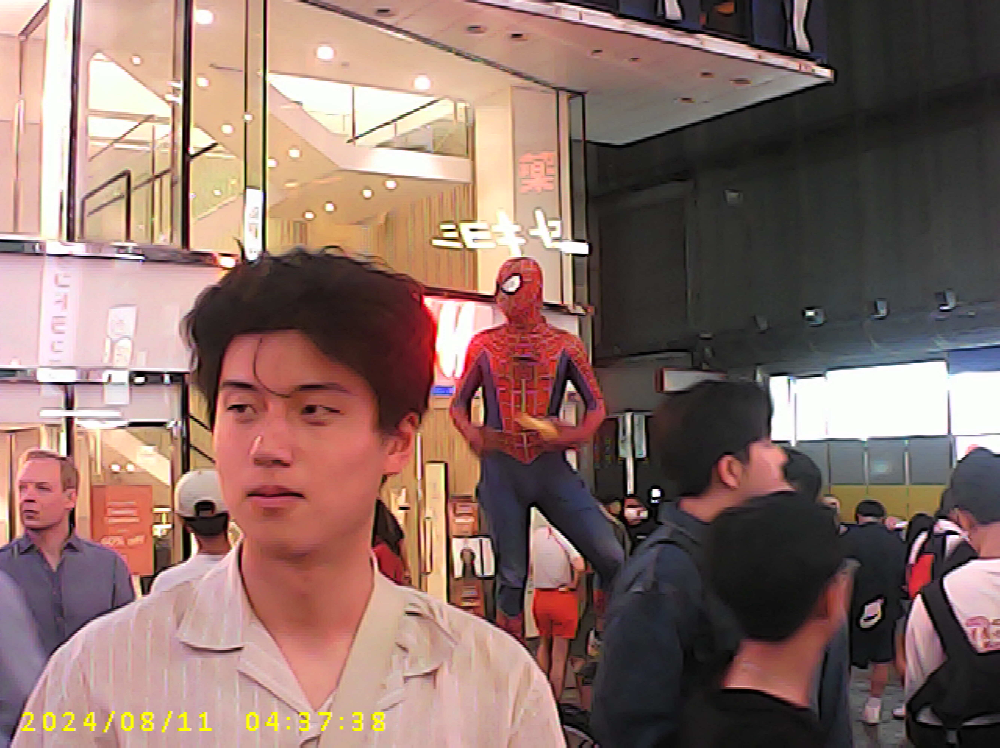

Hi, my name is Woody
Hello world!
Welcome to my website! My name is Woody Li, a second year undergraduate student at Carnegie Mellon University pursuing a Bachelors of Humanities and Arts in Information Systems and Music Technology. Music has always been my biggest passion in life, and I am always curious about how music influences each of us.